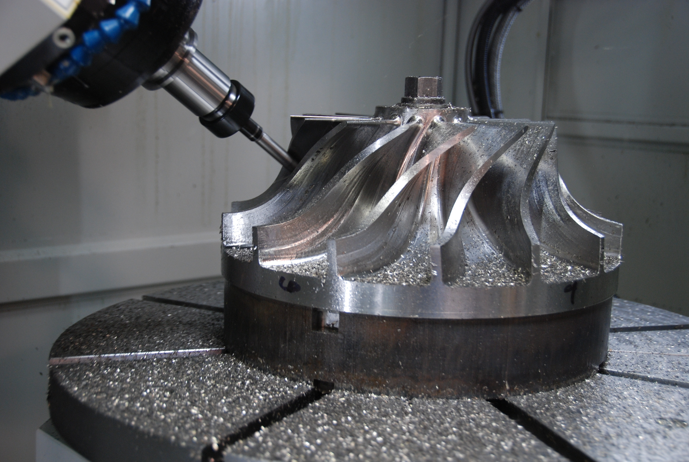
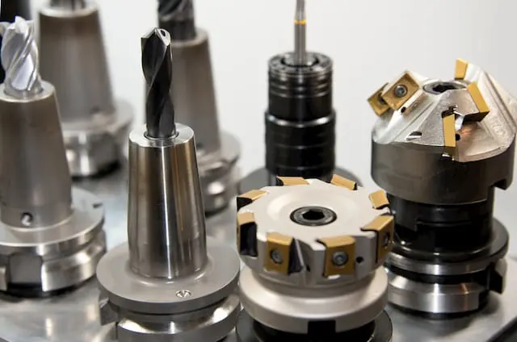

Precision CNC Metal Cutting

Precision metal cutting is often used in the automotive, aerospace, and defense industries. CNC machines make up the majority of workcenters today, offering automation, repeatability, and accuracy across a wide range of metal materials. With the ability to consistently hold tolerances of less than one thousandth of an inch (twenty-five microns), CNC machining allows manufacturers to produce highly detailed and complex geometries that would be difficult or impossible to achieve through traditional methods. This level of precision is especially important in applications where performance, safety, and reliability are critical, such as engine components or aircraft frames.

In addition to high volume industrial production, precision metal cutting also plays a key role in rapid prototyping and design development. Engineers often rely on CNC machining to quickly test the fit, function, and performance of a design before committing to mass production. This allows for rapid vision of designs, where small adjustments can be made and re-machined with minimal delay. The ability to move directly from a digital model to a physical metal part helps reduce development time and improve overall design accuracy, making CNC machining an essential step in modern production workflows.

Precision metal cutting is not just limited to large industrial manufacturers, it has become increasingly accessible to hobbyists and small scale designers as well. With the rise of affordable CNC machining services and online manufacturing platforms, individuals can now design parts at home using CAD software and send them out for professional production without needing their own expensive equipment. This opens the door for custom projects and functional prototypes for personal inventions. Many hobbyists use CNC machining to achieve strong, accurate metal parts that would be difficult to create with 3D printing or hand tools alone.
Recommendations
PCBWay
Fast quotes on affordable machined parts. All you need to do is upload a 3D part file, choose your material, and any extra specifications.
SendCutSend
Online CNC Machining Services with fast turnarounds and accurate work.
Haas Automation
Entry level CNC machine manufacturer. Great investment for small machine shops.
Makino
Top tier CNC machine manufacturer. Amazing investments for high end manufactu facilities.